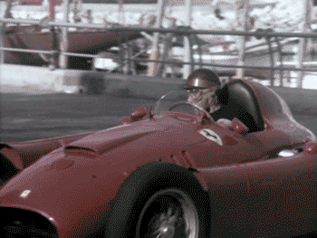

La Scuderia Ferrari es el equipo de carreras de automóviles de competición más antiguo del mundo, fundado en 1929 por Enzo Ferrari. En la década de 1940, Ferrari dio sus primeros pasos como constructor y productor de automóviles. En 1943, trasladó su actividad de Módena a Maranello. Su debut en el automovilismo de Grandes Premios se produjo en Italia 1948. En el año 1951 en el Gran Premio Silverstone (Gran Bretaña), José Froilán González consiguió la primera victoria para la escudería y, en 1952, Alberto Ascari, se hizo con el primer campeonato de Pilotos en el Gran Premio de Monza (Italia). El equipo italiano tendría que esperar hasta el año 1961 para proclamarse vencedores del Campeonato de Constructores, de la mano del piloto americano Phil Hill, que también triunfó en el de Pilotos.
La edad dorada de la escudería se produjo entre los años 2000 y 2004, donde la escudería dominó con mano de hierro. Esto, se tradujo en la mayor racha de la historia de la escudería, obteniendo cinco Campeonatos de Pilotos consecutivos de la mano del piloto alemán Michael Schumacher y seis Campeonatos consecutivos de Constructores. Sin embargo, coincidiendo con el cambio de reglamento que se produjo en el año 2009, la escudería italiana dió un paso atrás. Acarició el título en numerosas ocasiones, pero no contaba con el monoplaza más fuerte de la parrilla, viendose superado por dos de sus máximos rivales, Red Bull y Mercedes, que contaban con una mayor superioridad en el plano aerodinámico. 
Ferrari era uno de los equipos que utilizaban neumáticos Bridgeston (el resto de equipos utilizaban neumáticos Michelin). No obstante, a partir de la temporada 2007, todos los equipos empezaron a utilizar neumáticos Bridgeston, eliminando de la competencia al distribuidor francés Michelin. Más adelante, esta situación volvería a cambiar, ya que se estableció a Pirelli cómo proveedor único de neumáticos a todas las escuderías de Fórmula 1.
Es la única escudería que ha participado en todas las temporadas del Campeonato Mundial de Fórmula 1 desde su creación en 1950. También es el equipo en activo que ha conseguido más victorias (243), más veces el Campeonato Mundial de Pilotos (15) y el Campeonato Mundial de Constructores (16). La escudería es considerada uno de los cuatro grandes equipos de la F1, junto con Williams, McLaren y Mercedes.
Sin embargo, la participación de Ferrari no solamente se limita al campeonato de F1, ya que también ha obtenido 9 victorias en las 24 Horas de Le Mans (la más reciente se produjo en el 2019 con el Ferrari 488 GTE), 8 victorias en Mille Miglia (carrera de automóviles de época) y 7 en la Targa Florio, además de los 11 títulos conquistados en el Campeonato Mundial de Resistencia. Entre otras participaciones de la escudería destacan también las 12 Horas de Sebring y 1000 Millas de Monza.
No es ningún secreto que el equipo italiano tiene un aura, una magia y una historia especial. Tanto es así, que son muchos los pilotos que quieren conducir para el equipo Cavallino antes de la finalización de su carrera deportiva. Si hay un piloto que destaque entre todos, ese es Michael Schumacher, piloto alemán que ayudó a conseguir seis Campeonatos del Mundial de Constructores y 5 Campeonatos en el Mundial de Pilotos, sumando, además , un total de 72 victorias vestido de rojo.
Sin embargo, no fue el único. Nikki Lauda y Alberto Ascari son los otros dos pilotos que han dado más de un título a Ferrari,concretamente, dos. Ambos constituyen el segundo y el cuarto piloto que atesoran más triunfos en el equipo italiano, con un total de 15 victorias para el piloto austríaco y 12 victorias para el piloto italiano. Destaca también que solamente tres pilotos más (Fernando Alonso, Sebastian Vettel y Felipe Massa) han logrado alcanzar el hito de más de 10 victorias en la historia de la escuderia.
Para más información acerca de los pilotos que han militado en la escudería italiana, recomendamos consultar la página web stats f1, una plataforma on-line que proporciona datos cómo el número total de Grandes Premios disputados y número total de victorias, poles y podios conseguidos entre otros datos relevantes.
Tras el retiro de Michael Schumacher, Ferrari se encontraba en la búsqueda de un nueva líder que, de alguna manera, pudiera continuar con su legado. En 2010, se produjo el fichaje del piloto español Fernando Alonso. Aunque Alonso no logró ganar un campeonado con la escudería italiana, su presencia en el equipo sirvió para revitalizar todas las esperanzas perdidas y llevó al equipo a competir de manera consistente por victorias y campeonatos contra sus rivales más directos: Red Bull y Mercedes. Sin embargo, las batallas en pista y las estrategias de equipo mantuvieron a los aficionados en vilo hasta el final de la temporada.
Hubo un momento que supuso un antes y un después, y ese se produjo durante la celebración del Gran Premio de Europa 2012, el cual se celebró en el Circuito Urbano de Valencia el 24 de junio de 2012 y fue testigo de de una actuación magistral por parte de Fernando Alonso y un gran trabajo en equipo de la mano de la escudería italiana. El piloto español calificó undécimo lo que, en principio, parecía ser una posición desfavorable para poder aspirar ese día a la victoria. Fue una carrera repleta de accidentes múltiples y problemas mecánicos que provocaron que varios de los contendientes por el campeonato se vieran obligados a retirarse. Sin embargo, una vez más, Alonso hizo gala de su excepcional habilidad para avanzar y capitalizar todas las oportunidades que se le fueron presentando.
El punto de inflexión llegó en la parte final de la carrera, cuando Fernando Alonso ocupaba la segunda posición y se encontraba persiguiendo al Red Bull del piloto alemán Sebastian Vettel, el cual lideraba cómodamente la carrera hasta que un fallo mecánico en el coche de este último, le obligó a retirarse de la carrera, dejando al piloto español ocupando la primera posición. Finalmente, Alonso cruzó la línea de meta y se hizo con la victoria, desatando la euforia en el garaje de Ferrari y la celebración en las gradas por parte de todos los aficionados.